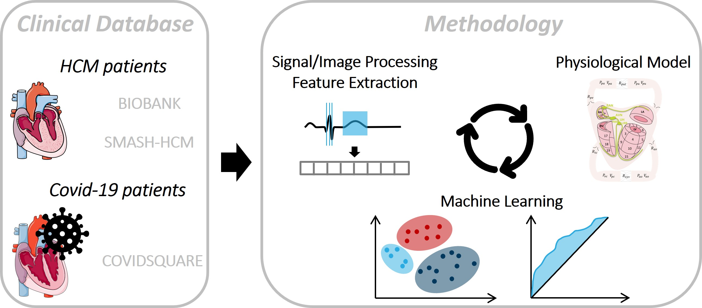

Clinical Motivation
Heart failure (HF) affects over 26 million people globally. This project focuses on two high-risk patient groups: those with hypertrophic cardiomyopathy (HCM) and those affected by COVID-19. The goal is to enhance disease management and provide novel tools for better risk stratification.
